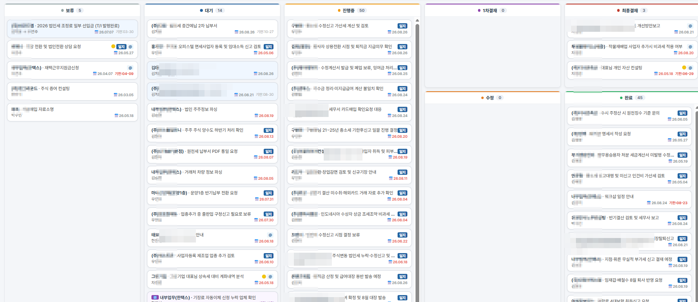

사장님의 스토리를
기억하는 세무사
장부 속 숫자에는 회사의 이야기가 담겨 있습니다.
한택스는 그 이야기를 차곡차곡 모아서,
낼 세금과 챙길 것들을 먼저 말씀드립니다.
한택스는
사장님의 스토리를
낼 세금을,
미리 말씀드립니다
월별 손익과 예상 부가세·소득세를 매달 정리해 보내드립니다. 납부할 세금을 미리 알고, 준비하실 수 있게.
"그 예상이 정확한가요?"
현재 증빙 기준과 작년 소득률 기준, 두 가지로 계산해 함께 보여드립니다. 확정 금액이 아니라 준비할 범위를 아는 것이 목적입니다.

실제 리포트 화면입니다 · 고객 정보는 가렸습니다
물어보시기 전에,
먼저 짚어드립니다
절세 방안, 세무조사 위험, 증빙 실수를 프로그램이 먼저 찾아냅니다. 시기를 놓치면 되돌릴 수 없는 것들이라서요.
"우리 회사에 해당되는 게 있긴 한가요?"
30여 가지를 모두 보내지 않습니다. 사장님 회사 자료에 해당되는 항목만 골라 안내드립니다.
창업감면 기간 경과끝나는 해부터 세금이 크게 오릅니다 — 미리 알려드립니다
통합고용공제 추징 가능직원이 줄면 받았던 공제를 되돌려낼 수 있습니다
건강보험 정산고지서가 나오기 전에 미리 안내합니다
퇴직금 추계액직원과 대표님 퇴직금이 얼마나 쌓였는지 확인합니다
가지급금 인정이자 입금시기를 놓치기 전에 안내드립니다
노란우산공제 가입소득공제 혜택을 놓치고 있는지 확인합니다
이 외에도 30여 가지 항목을 사전에 점검합니다.
회사의 이야기를,
빠짐없이 모읍니다
매일 쓰는 상담일지, 회사마다 등록되는 할 일, 신고서마다 남는 결재 기록 — 직접 만든 프로그램에 사장님 회사의 이야기가 차곡차곡 쌓입니다.
"담당자가 바뀌거나 자리를 비우면 문제없나요?"
기록이 사람의 머릿속이 아니라 프로그램에 남습니다. 담당자가 바뀌어도, 부재중이어도 회사의 이야기는 그대로 이어집니다.

실제 사용 중인 화면입니다 · 업체명과 이름은 가렸습니다
사장님의 스토리를
지키는 사람들
찾아내는 건 프로그램이 하고, 판단하고 소통하는 건 사람이 합니다.
 한진식
대표 세무사 · 세무사 47기 · 리포트 프로그램 직접 개발
한진식
대표 세무사 · 세무사 47기 · 리포트 프로그램 직접 개발
 차정범
파트너 세무사 · 15년 이상 경력
차정범
파트너 세무사 · 15년 이상 경력
"숫자를 정리하는 일은 프로그램에게 맡기고,
한택스 대표 한진식 세무사
저희는 사장님과 이야기하는 데 시간을 쓰겠습니다."
담당 세무사 2인
- 500여 개 업체 — 간이사업자부터 상장 준비 법인까지 다양한 업종
- 각종 해명자료 제출과 세무조사 대응 경험
- 리포트 프로그램을 직접 개발 — 고객에게 필요한 것을 실무에서 파악
- 직원을 거치지 않고 대표 세무사와 직접 소통
담당 직원
- 대부분 전산세무 1급 보유 및 교육 수료
- 세무회계경진대회 2회 연속 입상
- 신입 직원은 일정 교육을 마친 뒤 업체를 배정합니다
- 장기근속 담당자가 회사의 이야기를 기억합니다